Aztec Mythology |
Aztec mythology is the collected myths and legends of the Aztec people. One of their best-known myths is the founding of the city Tenochtitlan, built on the spot where the travelers saw an eagle perched on a cactus and holding a rattlesnake, an image which endures on the Mexican flag today. |
________
| 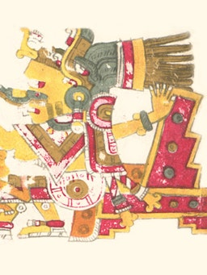 |
ChalchiuhtlicueProminent Aztec water goddess, patron of newborns and the sick. |
| 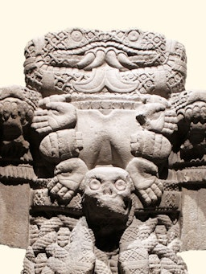 |
CoatlicueAztec fertility goddess wearing a serpent skirt, and mother of Huitzilpochtli. |
| 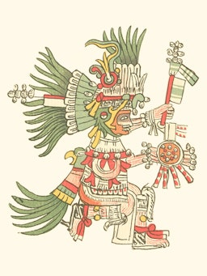 |
HuitzilopochtliAztec god of war, who led his people to found the city of Tenochtitlan. |
| 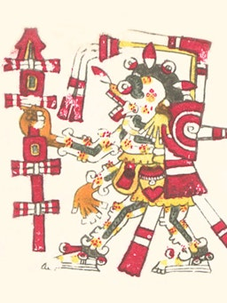 |
MictlantecuhtliSkeletal Aztec god of death who ruled over Mictlan, the land of the dead. |
| 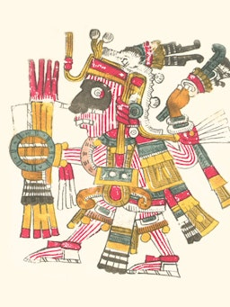 |
MixcoatlAztec god of the hunt, inventor of fire, and patron of the Tlaxcalan people. |
| 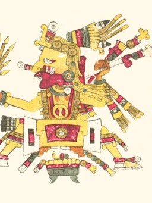 |
OmeteotlAztec creator deity, formed of both Ometecuhtli and Omecihuatl. |
| 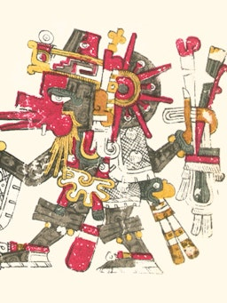 |
QuetzalcoatlAztec Feathered Serpent deity, god of winds and bringer of maize. |
| 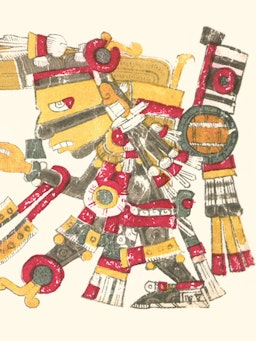 |
TezcatlipocaThe “Smoking Mirror,” omnipresent Aztec deity ruling the modern age. |
| 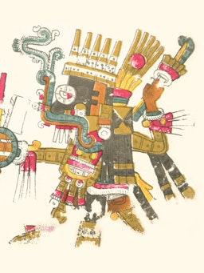 |
TlalocAztec god of thunder and rain, whose blessings nurtured vital crops. |
| 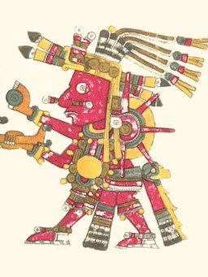 |
TonatiuhThe fifth and current sun of the Aztecs, whose death signals the world's end. |
| 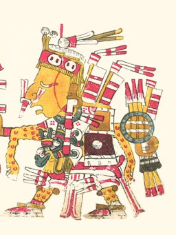 |
Xipe TotecThe “Flayed One,” Aztec god of agriculture, seasons, fertility, and goldsmiths. |
| 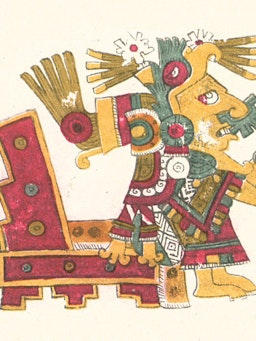 |
XochiquetzalYouthful Aztec goddess of fertility, sexuality, weaving, and the moon. |
________
Aztec mythology is the body or collection of myths of the Aztec civilization of Central Mexico. The Aztecs were Nahuatl-speaking groups living in central Mexico and much of their mythology is similar to that of other Mesoamerican cultures. According to legend, the various groups who became the Aztecs arrived from the North into the Anahuac valley around Lake Texcoco. The location of this valley and lake of destination is clear - it is the heart of modern Mexico City - but little can be known with certainty about the origin of the Aztec. There are different accounts of their origin. In the myth, the ancestors of the Mexica/Aztec came from a place in the north called Aztlan, the last of seven nahuatlacas (Nahuatl-speaking tribes, from tlaca, "man") to make the journey southward, hence their name "Azteca." Other accounts cite their origin in Chicomoztoc, "the place of the seven caves", or at Tamoanchan (the legendary origin of all civilizations).
| 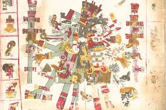 | 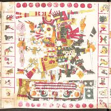 |
The Mexica/Aztec were said to be guided by their patron war-god Huitzilopochtli, meaning "Left-handed Hummingbird" or "Hummingbird from the South." At an island in Lake Texcoco, they saw an eagle, perched on a nopal cactus, holding a rattlesnake in its talons. This vision fulfilled a prophecy telling them that they should found their new home on that spot. The Aztecs built their city of Tenochtitlan on that site, building a great artificial island, which today is in the center of Mexico City. This legendary vision is pictured on the Coat of Arms of Mexico.